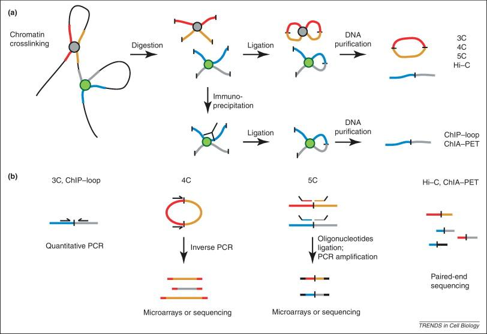
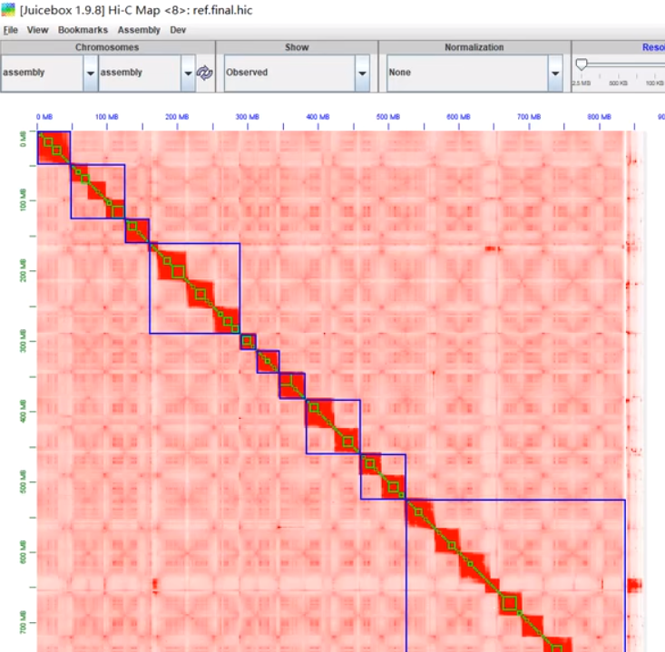
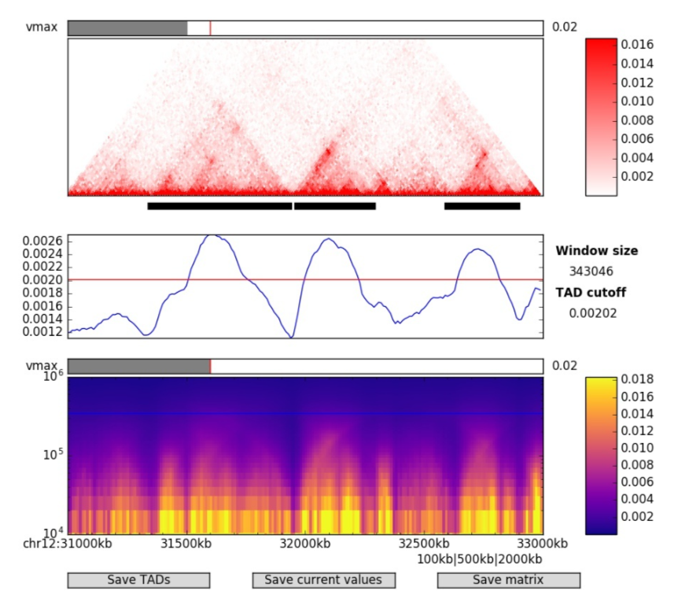

HiC
示意图

HiC相比3/4/5C可以做到全基因组范围的互作；将DNA用蛋白交联固定后，水解得到蛋白周边的DNA片段，连接DNA片段的末尾。如此，一个测序Interval中，前半段与后半段将会被map到基因组中两个不同的位置，提示这两个位置在三维空间中接近。
概念
真核生物的染色质空间组织有如下三个关键层级结构：（“增强子在A区室的TAD内通过Loop接触启动子”）
-
Compartments (区室) --- 全基因组范围、转录状态的活跃（A）和沉默（B）区室
- 1~10 Mb
- 成因：组蛋白修饰（e.g. A区室中H3K36me3富集）
- 意义：划分全局转录活跃与沉默区域
- 动态响应发育或环境信号（X染色体失活时，整条染色体从A区室转为B区室）
-
TADs (拓扑关联域) --- 局部互作频繁的连续区域、内部基因调控相对独立
- 0.1~1 Mb
- 成因：Cohesin介导的DNA环挤出（loop extrusion）被边界CTCF位点阻挡，形成稳定域结构
- 意义：限制调控元件的作用范围、隔离不同染色质状态（增强子通常只能激活同一TAD内的基因）；TAD边界破坏可能导致Loops跨越原边界，引发异常基因表达
- 辅助验证：CRISPR删除边界序列，观察基因表达变化；ChIP-seq检测CTCF/Cohesin在边界的富集
- 边界相对保守，内部互作随细胞状态动态变化
-
Loops (染色质环) --- 远距离精准互作形成的环
- 几十kb ~ 几Mb
- 成因：Cohesin复合物将两个CTCF位点拉近形成环（e.g. 增强子-启动子互作）
- 意义：介导远端调控元件与目标基因的直接互作
- 高度动态/快速响应信号
CTCF位点是指CTCF（CCCTC-binding factor）蛋白结合的特定DNA序列，基因组中数量众多（约有15000个）
Gene Reguation Pipeline
最常用的工具集可能是Juicer与Hic-pro，建议直接问 Deepseek “AAA 如何使用”
| 工具 | 用途 | -- |
|---|---|---|
| HiC-Pro | fq生成交互矩阵 | -- |
| Juicer | fq生成交互矩阵，TAD/Loop | .hic格式与可视化工具 Juicebox 无缝集成 |
| Cooler | 格式转换，矩阵缩放/归一化 | 对于.cool格式，HiGlass支持可视化，cooltools支持TAD/diff |
| cworld-dekker | 主要下游分析 | 输入矩阵格式：bin1 bin2 count |
| HiCExplorer | bam生成交互矩阵，主要下游分析 | hicPlotxxx值得一试，--BED H3K27ac_peaks.bed 可叠加 Chip-seq peak |
主要下游分析：矩阵缩放/归一化，TAD/Loop，AB Compartment(PCA), 差异检测，热图
练习数据：表观遗传数据网站 ENCODE ，或各类 4DN DCIC workshop，推荐2018-bootcamp教程以及其提供的数据
常见格式
.hic: 二进制，Juicer系列的互作矩阵.cool/ 多分辨率.mcool: 基于 HDF5，包含 bins（基因组区间）、pixels（交互对）、weights（归一化系数）.matrix (HiC-Pro)稀疏矩阵
bin1 bin2 count
1 1 50
1 2 20
.pairs可通过pairtools处理
## 注释行（基因组版本、格式说明）
#columns: readID chr1 pos1 chr2 pos2 strand1 strand2
read1 chr1 100000 chr2 200000 + -
-
.expected (Cooler): 归一化后的期望交互频率（用于比较） -
.loops / .domains(.bedpe): TAD/Loop区域chr1 1000000 1050000 chr1 2000000 2050000 0.05
4dn-dcic 提供的工具 hic2cool 可以进行 .hic → .cool 转换，而 cooler load/cload 可以将一些其它各种转换为 .cool
Preprocess -- 获得：互作矩阵
准备好 refGenome，随后将reads比对（bwa men --SP5M）。过滤、得到 Valid Pairs 后，将基因组拆为按不同分辨率的bins，得到互作矩阵(Contact Map)
HICUP(hicup_mapper), Juice (bwa), hiclib, HiC-Pro (bowtie2) 打包了这个流程，且都对bwa或bowtie2进行了优化设置。
限制性酶切位点来自实验设计，一些示例
背景：一般而言，对于一组PE reads，R1与R2将各自比上某个区域；但是，有时一些单侧Read过长、跨越了link site，如此它可能会匹配到两个区域。
除了常规的QC与Trimming，可以使用 HiCUP 修正一些跨越link site的单侧reads：
- 指定Type Ⅱ限制性内切酶切割参考基因组，生成整个参考基因组的酶切位点文件
- 通过酶切位点文件得到link site的序列，对跨越link site的单侧reads去除link site后的片段
- mapping，使用bowtie2
- 参照酶切位点文件，去除常见错误模式的HiC片段
- 去除PCR重复
A/B compartment
Idea: A/B 区室的位置有分隔，在PC1上会有明显区分
步骤：互作矩阵 --> z-scale --> PCA(取PC1)，其(正/负)=>(A/B)，正负phasing需要加上表观信息进行判断（Chip-seq数据）
验证：A compartment 区域应与高表达基因共定位，且富集 H3K27ac、DNase I 敏感位点
建议分辨率：50 kb - 1 Mb 哺乳动物，10-50 kb 果蝇
用途一：物种间比较 compartment 区域的保守性
- 方法一：Juicer 提取互作矩阵 + sklearn PCA （来自Deepseek，待验证）
# juicer_tools dump <observed/oe> <hicFile(s)> <chr1>[:x1:x2] <chr2>[:y1:y2] <BP/FRAG/分辨率 binsize> [outfile]
juicer_tools dump observed KR input.hic chr1 chr1 BP 100000 chr1_matrix.txt
python -c "
import numpy as np;
from sklearn.decomposition import PCA;
matrix = np.loadtxt('chr1_matrix.txt');
pca = PCA(n_components=1);
pc1 = pca.fit_transform(matrix).flatten();
np.savetxt('pc1.txt', pc1, fmt='%f');
"
paste hg38.chrom.sizes pc1.txt | awk '{print $1"\t"$2"\t"$3"\t"($4>0?"A":"B")}' > compartments.bed
- 方法二：cooltools 可自动 phasing
## pip install cooltools
## <input.cool> 若有分辨率则需指定,e.g. <input.mcool::resolutions/100000>
## ignore-diags 忽略前两个对角线（避免局部交互干扰）
## phasing-track genes.bed 利用基因密度文件自动校正方向（确保 A=活跃）
## Output: AB.eigenvector.bedGraph：PC1 值 (正/负)=>(A/B) -----
cooltools eigs-cis <input.cool> --phasing-track None --out-prefix AB --n-eigs 1 --ignore-diags 2
# awk '{print $1"\t"$2"\t"$3"\t"($4>0?"A":"B")}' AB.eigenvector.bedGraph > AB.bed
- 其它工具：homer, HiCExplorer, cworld-dekker

TAD
流程：互作矩阵 --> TAD边界鉴定（.bed） --> TAD图
建议分辨率：10-50 kb 哺乳动物，1-10 kb 果蝇
验证：边界通常富集CTCF/Cohesin（ChIP-seq验证），富集活跃调控元件（启动子/增强子）
用途一：跨物种/细胞类型比较边界位置（如phyloP评分）
用途二：边界破坏可能导致疾病（如癌症基因组重排）
若多种方法得到的边界不一致，可取其交集 bedtools intersect -a method1.bed -b method2.bed > consensus_boundaries.bed
-
方向性指数（Directionality Index, DI）
- DI = (binA 上游的交互总和 - 全局期望)/标准差 - (binA 上游的交互总和 - 全局期望)/标准差
- TAD边界处的交互会呈现不对称性（一侧高、一侧低），即：DI值的极值点（峰或谷）对应TAD边界
- 工具：hicFindTADs（HiCExplorer），cworld-dekker
-
- IS = log2(窗口内交互总和/全基因组背景交互)
- 通过滑动窗口计算局部交互的绝缘强度，边界处绝缘分数最低（交互被阻断）,即：局部最小值对应TAD边界
- 工具：cooltools insulation
-
几何特征：矩阵三角形检测
- 归一化矩阵（KR/VC） --> 滑动窗口检测交互强度的锐减拐点 --> 过滤假阳性（如技术噪声）
- 工具：juicer_tools arrowhead
-
其它：Graph 聚类分割，HMM，DL 多模态数据整合预测TAD（e.g. CTCF、组蛋白修饰）

Loop
流程：互作矩阵 --> (显著高的交互频率，基于不同统计模型) --> Loop 锚点对（.bedpe 文件，包含 Loop 锚点坐标和交互强度）
原理：（每个候选位点的） Local Interaction Enrichment = 实际观测的交互值 / 基于距离衰减模型的期望交互值（通常通过基因组距离拟合）
建议分辨率：5kb - 10kb 哺乳动物
验证：边界通常富集CTCF/Cohesin（ChIP-seq验证），Loop 锚点（anchor）两侧交互强度对称，距离范围 20 kb - 2 Mb（哺乳动物）
-
juicer_tools hiccups- 在不同分辨率下（如 5kb/10kb
-r 5000,10000）检测局部交互峰 - 一定记得归一化
-k KR
- 在不同分辨率下（如 5kb/10kb
-
Fit-Hi-C
- 基于 负二项分布 建模交互频率，检测显著富集的交互对
- 低分辨率数据（>10 kb）或稀疏矩阵
Scaffolding and Phasing
HiC可用来辅助进行染色体级别基因组的组装；不过HiC组装的染色图其实存在大量错误，需要用更精细的遗传连锁图谱进行纠正
| 工具 | 流程 | 说明 |
|---|---|---|
| LACHESIS | 1.根据contact将reads分组；2.组内reads ordering、组装；3.contigs orient | 经典，但停止更新 |
| 3D-DNA + Juicer | 1.切割与HiC数据相悖的contigs；2.Juicer 得到Hi-C maps；3.3D-DNA 根据map重新链接；4.juicerbox 手动矫正 | 二倍体效果最佳 |
| All-HiC | -- | 针对多倍体和高杂合度的情况 |
| chromap+YaHS | 1.chromap快速mapping；2.YaHS scaffolding | 更快，似乎排序更准确 |
- 其余：HiFiasm 可直接基于HiC数据进行组装，上表只是辅助
- 评估方法：准确度(how?)，挂载率(草图中有多少比例的base被包含在染色体中)
Meta HiC
hicSPAdes, HiCBin等使用HiC技术辅助Binning
参考
A/B 染色质区室： https://cloud.tencent.com/developer/article/1556901
PMC：https://www.ncbi.nlm.nih.gov/pmc/articles/PMC4490074/
HiC辅助组装：https://maimengkong.com/m/?post=1178